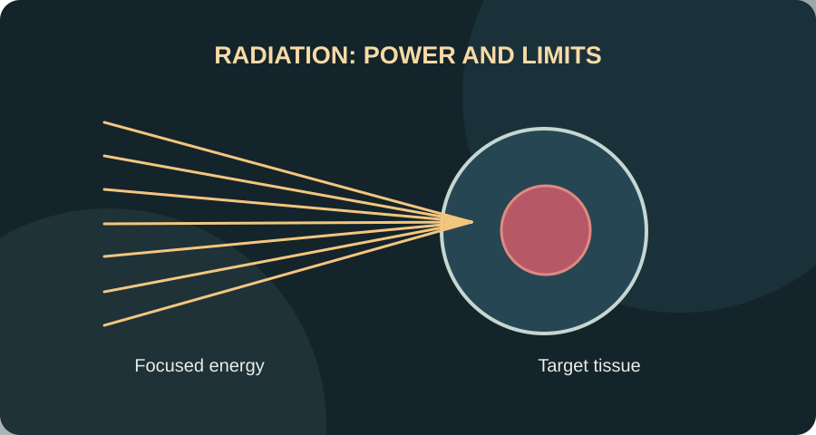

1. A mysterious form of invisible energy (1895)
In 1895, German physicist Wilhelm Röntgen was experimenting with an electrical discharge tube when he noticed that an unseen form of energy could pass through materials and cause a screen to glow. He eventually made the famous image of his wife Anna's hand, showing bones and her wedding ring beneath the skin.
The discovery seemed almost magical. Physicians had never before been able to visualize hidden bones and internal structures in this way without opening the body. Röntgen called the rays X-rays, using the letter X for something unknown.
But X-rays did more than produce pictures. Their energy could also affect living tissues. Soon doctors and researchers began wondering whether that destructive power could be directed against malignant growth.
2. Becquerel, the Curies, and radioactivity
In 1896, French researcher Henri Becquerel discovered that certain substances, including uranium compounds, emitted penetrating radiation naturally. Marie and Pierre Curie investigated these materials and searched for more intense sources.
Using sensitive measuring instruments, the Curies worked through enormous quantities of ore to isolate a small amount of radium. The element emitted intense radiation. It demonstrated that matter itself could be a source of energy capable of penetrating and damaging tissues.
The work was hazardous. Researchers handled materials without the protective equipment that would be expected today. Marie Curie's hands suffered injury, and the long-term consequences of exposure were poorly understood. The scientific power of radiation was becoming clear before its dangers were fully recognized.
3. How radiation affects cells
Radiation can damage important components of a cell, especially DNA. The damage may kill a cell, prevent it from dividing, or introduce changes into its genetic information. Rapidly dividing tissues are often particularly vulnerable to certain forms of radiation injury.
That explains the paradoxical appeal of radiation as a cancer treatment. Cancer involves abnormal growth, so a method that damages cellular reproduction might shrink a tumor. But healthy tissues also contain rapidly dividing cells—for example, in skin, bone marrow, and the lining of the digestive tract.
Radiation is therefore not a magical beam that recognizes only cancer. Its benefit depends on delivering a sufficient dose to malignant tissue while limiting injury to surrounding healthy cells. Treatment planning and the dose delivered to different tissues matter enormously.

4. Emil Grubbe begins treating cancer with X-rays
A young Chicago experimenter named Emil Grubbe saw the destructive effects of X-ray exposure on skin and nails. He reasoned that if rays could injure healthy dividing tissue, perhaps they could also destroy malignant cells.
On March 29, 1896, Grubbe began using an improvised X-ray apparatus to treat Rose Lee, a woman whose breast cancer had returned after surgery. He attempted to shield surrounding tissue as best he could with the materials available. After repeated treatments, the visible tumor shrank and changed dramatically.
For a brief time this looked like a new kind of triumph: a cancer had responded to an energy source rather than to a surgeon's knife. Yet Rose Lee's disease had already spread internally. She later died after cancer affected distant organs.
The lesson was painful but important: local shrinkage does not prove that cancer has been eliminated throughout the body.
5. The birth of radiation oncology
Grubbe's work helped inspire a rapidly expanding field of cancer treatment using X-rays and radioactive materials. Physicians in Europe and America began treating tumors with radiation. Medical journals and newspapers became enthusiastic, and some early practitioners made extravagant claims that they had found a cure for all cancers.
Radium offered new ways to expose cancers to intense local radiation. Researchers placed radioactive substances near or within tumors, experimented with different machines, and developed more powerful equipment. Later technologies would make the control and focusing of radiation much more sophisticated.
For many localized cancers, radiation could produce meaningful results. Tumors could shrink dramatically; some patients experienced long-term control, and pain or other symptoms could improve. But unrestrained enthusiasm led to dangerous practices, because the field still had to discover its own limits.
6. Two local weapons: The knife and the ray
Radiation and surgery differed in method, but both were generally focused on a particular site. A surgeon could remove tissue from one region. A radiation beam could deposit damaging energy in a chosen region. Both approaches could be powerful when cancer was confined and accessible.
Both struggled when malignant cells had already spread to distant organs. Doctors might increase radiation doses in an attempt to destroy all cells, but higher doses often produced more injury rather than more cures. A local tool, however strong, cannot automatically cure a body-wide disease.
The chapter therefore extends a lesson from Halsted's surgery. More treatment intensity is not the same as better treatment. Increasing the number of tissues removed or the radiation dose may increase harm if the disease has already exceeded the method's reach.
7. The terrible second limit: Radiation can cause cancer
Radiation's ability to damage DNA has another consequence: some exposure can produce mutations in cells that survive. Those mutations may contribute to the development of cancer years later. Thus, the same physical phenomenon that can destroy a tumor may under other circumstances increase the risk of a future malignancy.
In the early twentieth century, this danger was not consistently recognized or managed. Some industries sold radioactive products or exposed workers to radium with grossly inadequate protections. Mukherjee recounts one especially tragic example: the women who painted watch dials with radium-containing luminous paint.
8. The Radium Girls
At the U.S. Radium company, young women painted the numbers on watches using luminous paint containing radium. For precision, workers were encouraged to shape their brushes with their lips, repeatedly bringing small quantities of radioactive material into contact with their mouths.
Many developed severe injuries to their jaws, teeth, and other tissues. Some later developed bone cancers and leukemias. A group of affected women sued the company, and in 1928 a settlement provided compensation to several of them. The financial outcome was small compared with the damage they had suffered. Some died soon afterward.
The Radium Girls became a lasting illustration of occupational harm: a substance promoted as modern and beneficial could destroy the bodies of workers when safety was ignored. The history of medical radiation cannot be separated from the history of radiation safety and public accountability.

9. The suffering of radiation pioneers
Radiation's pioneers were also exposed repeatedly. Marie Curie developed serious blood-forming-system damage over a lifetime of exposure and died in 1934 from an illness associated with that exposure; the book discusses her death in this context. Emil Grubbe suffered extensive radiation injuries and cancers, endured multiple surgeries, and eventually died after a long struggle with the consequences.
These stories illustrate the difference between discovering that something is powerful and learning to use it safely. The pioneers found a new physical tool before fully understanding its long-term effects.
10. Why a systemic treatment was still needed
By the middle of the twentieth century, it was clear that radiation could be effective against locally confined cancer. It could sometimes destroy malignant tissue without requiring an operation and could relieve symptoms when cure was impossible. But it remained limited when cancer spread widely.
The surgeon Willy Meyer, thinking about the problem in the early 1930s, suggested that cancer treatment might need an additional systemic therapy after surgery. He recognized that removing an original tumor was not always enough if malignant cells had already moved beyond it.
This points back toward Farber's chemotherapy experiments. A chemical that circulates throughout the body might reach places a knife or radiation beam could not. The challenge would be finding a substance that damages cancer more than it damages its host.
11. A surprising resemblance to Galen's old idea
Mukherjee makes an unusual historical connection. Galen's black-bile theory was wrong, but it treated cancer as a disease that could involve the body beyond a single visible mass. Modern medicine sometimes encounters a similar clinical reality: malignant cells can spread through blood and lymph and establish new tumors far from the original site.
The resemblance is in the problem, not the explanation. There is no black bile carrying cancer. The mechanisms involve malignant cells, invasion, circulation, and distant growth. Still, the idea that cancer can be systemic helps explain why local treatment has limits.
12. The deeper meaning of Chapter 9
Radiation demonstrates that a treatment's power and its danger may arise from the same mechanism. DNA damage can kill cancer cells, but it can also harm normal tissues or contribute to later malignancy. Scientific excitement must be matched by careful measurement, safety, and long-term follow-up.
The chapter also deepens the distinction between local control and total cure. Rose Lee's visible response did not stop her cancer elsewhere. The Radium Girls show that industrial and medical advances can bring unintended human harm when caution is ignored.
Chapter takeaway: Radiation became a crucial weapon against localized cancer, but it could not solve every form of the disease and was dangerous when misused. Medicine still needed a way to attack malignant cells throughout the body while protecting healthy tissue.